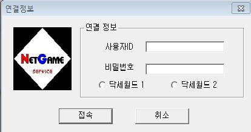

왁자지껄 떠들자
작성자: 슬라이딩(webcyber1)
작성일: 2015-04-15 21:43:00
61216, "어서오게, 브린힐트에 온 걸 환영하네. 나는 지금은 이곳에서 젊은이들을 가르치는 낙으로 사는 늙은이라네. 한때는 나도 이름을 날리던 용병이었지만 지금은 한낱 늙은이에 불과하지."
61217, "지금부터 자네에게 어떻게 하면 이 어지러운 세상에서 살아나갈 수 있는가를 가르쳐 주겠네."
61218, "우선 자네의 모습을 보게나. 자네는 지금 막 모험의 세계에 뛰어든 풋나기라네. 기본적인 이동은 가고자 하는 곳을 마우스로 클릭하면 된다네. 내 앞으로 걸어와보게."
61219, "잘 했네. 자 이제 다시 자네가 있던 자리로 돌아가게."
61220, "자 그러면 이제 자기 캐릭터를 마우스로 두 번 눌러보게."
61221, "방패모양의 창이 보이나? 이 메뉴가 모든 메뉴의 기본이 되는 창이라네. 이 메뉴로부터 모든 다른 메뉴를 띄울 수 있지. 이 메뉴는 위쪽의 X표를 누르면 없어지고 _표를 누르면 작아지지, 이 조작은 어떤 메뉴라도 동일하니 잘 익혀두게. 한번 해 보겠나? 우선 X를 눌러보게."
61222, "잘 했네. 그럼 다시 캐릭터를 두 번 클릭해서 메뉴를 띄워보게."
61223, "다음은 _표를 눌러보게."
61224, "잘 했네. 작은 방패모양이 보이나? 그 방패를 다시 클릭하면 다시 커진다네. 한 번 해 보게."
61225, "이 창은 F2를 눌러서도 나오게 할 수 있네. 한번 해 보려나?"
61226, "이런, 실수! 다시한번 F2를 눌러보게."
61227, "이거.... 늙으면 정신이 없어서 말이지... 이미 본 바와 같이 F2를 누르는 것으로 이 창을 나오게 했다가 없앴다가 할 수 있지. 다른 메뉴창에도 적용되는 기능이니 잘 익혀두도록 하게."
61228, "그리고.. 메뉴창의 맨 위에 있는 장식에 마우스를 가져간 다음 버튼을 누른채로 마우스를 움직이면 창의 위치를 바꿀 수 있네."
61229, "다음은 이 메뉴로부터 시작되는 다른 메뉴들에 대해 설명하겠네.. 우선은 메뉴의 오른쪽에 있는 버튼들부터... '대화창'이라는 버튼을 눌러보게."
61230, "대화창이 보이나? 이 대화창은 다른 이들과의 대화나 다른 사람들로부터 보내져 오는 귓속말 등을 표시해 주는 창이라네. 구석의 네모 버튼으로 크게 만들 수도 있어. 해보겠나?"
61231, "확대된 창을 다시 줄이려면 네모버튼을 다시 누르면 되지. 자. 해보게."
61232, "대화창을 보지 않으려면 X표로된 버튼을 누르면 된다네 눌러보게."
61233, "대화창은 F5키로도 나오게 할 수 있다네. 해 보려나?"
61234, "다시 F5를 누르면 사라지지. 눌러 보게."
61235, "이제 감이 잡히나? 다음은 '사용자'버튼을 설명할 차례네만 아쉽게도 이 기능은 세월과 함께 조용히 묻혀 버렸다네. 참 안타까운 일이었지..."
61236, "|이번엔 F6을 한번 눌러보게."
61237, "|전체맵에 해당되는 키는 F6일세. 기억하게나. 다음은.. 음... 뭐였지? .. 맞아! '사용자'버튼일세. 이 버튼은 현재 이 세계에 들어와 있는 사람들의 목록을 보여 준다네. 해 보려나?"
61238, "|이것도 단축키가 있네. 목록을 없애려면 F7을 누르면된다네. 한번 눌러보게."
61239, "다음은 자기정보 보기 기능일세. 메뉴의 아래쪽에 빨간색의 책모양 버튼을 눌러 보게."
61240, "이 창에서는 자신의 능력을 수치로 표현해 준다네. 이 창의 기능에 대응되는 키는 F3일세. 눌러 보려나?"
61241, "잘 했네. 다음은 장비/장착 및 아이템 창을 보여 주겠네. 창의 아래쪽에 있는 창과 동그란 방패모양의 버튼을 눌러 보게."
61242, "여기서는 자네가 가지고 있는 물품들과 자네가 장비하고 있는 물품들을 보여 준다네. 장비는 보다시피 각 부위별로 7가지, 그리고 가지고 다닐 수 있는 물품은 28개 뿐이라네. 잘 기억해 두어야 할꺼야."
61243, "여기서 장비를 하려면... 이런.. 자네는 지금 맨몸이었지... 하는 수 없지. 내가 쓰던 칼과 갑옷를 주겠네."
61244, "일단 내 앞으로 와서 이 칼을 집어들게. 칼이 있는 위치로 이동하면 칼을 집을 수 있다네."
61245, "그 옆의 갑옷도 집어 들게."
61246, "가진 물건에 칼과 갑옷이 보이나? 칼은 손 위치로, 갑옷은 몸위치로 가져가면 장비가 된다네. 우선 칼을 장비해 보게나."
61247, "몸에는 갑옷을 장비하게."
61248, "같은 요령으로 칼이나 방패같은 무기, 방어구 종류는 손에 장비하고, 투구나 모자는 머리, 신발은 발에 장비하면 된다네. 이해하겠나?"
61249, "아! 그리고 중요한 것 한가지. 사용하고 싶은 물건은 머리쪽으로 가져가면 된다네. 잊지 말게, 중요한 것이니."
61250, "자.. 다음은... 뭐였더라.... 장비를 했으니 전투를 해 봐야지... 방의 오른쪽에 문이 있는게 보이나? 우선은 마우스 커서를 그쪽으로 가져가보게 마우스 커서의 모양이 바뀌는게 보일게야."
61251, "보이나? 이처럼 다른 지역으로 이동하거나 밖으로 나간다든지 하는 곳에 커서를 가져가면 커서의 모양이 바뀐다네. 그럼 문으로 들어가 보게."
aa
댓글 4
주인님(kjc6120) 2015-04-15 22:33:00
주인님(kjc6120) 2015-04-15 22:33:00
kimmg08(kimmg08) 2015-04-16 11:19:00
드라이아이스(ssibajle1) 2015-04-16 13:28:00